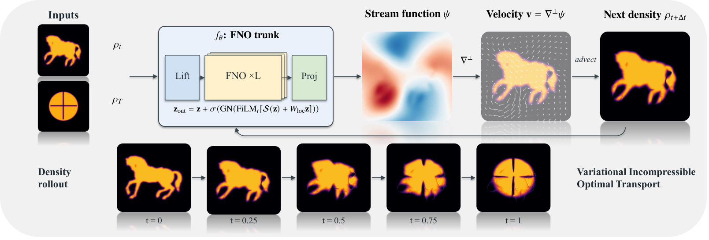
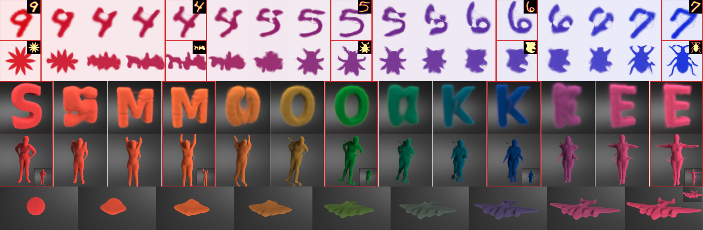

VIOT · arXiv 2026
A Variational Optimal Transport Operator on Incompressible Flow
Georgia Institute of Technology
Incompressible transport · Chinese poetry
Poetry in motion
春江潮水连海平，
海上明月共潮生。
Zhang Ruoxu · A Moonlit Night on the Spring River
A single trained operator transports density through the opening couplet, forming each character through a continuous sequence of fluid motion.
{kind=link}
Abstract
We present the Variational Incompressible Optimal Transport (VIOT) operator, a generative neural operator for amortized incompressible density transport. Given a new source-target density pair, VIOT predicts a divergence-free velocity field and generates the full transport trajectory by feed-forward inference, replacing the hour-scale per-pair optimization used by adjoint fluid solvers and differentiable simulation baselines.
The system consists of three components: a stream-function or vector-potential representation that enforces incompressibility by construction, a regularized incompressible transport objective that balances endpoint accuracy and flow smoothness, and a Fourier Neural Operator backbone that amortizes the solve across new pairs and grid resolutions. Together, these components make incompressible transport a reusable neural operator that facilitates various transport processes. Further, the generative capability extends beyond the training distribution, with VIOT producing incompressible transports for user-drawn source-target pairs in a real-time interactive system.
We demonstrate VIOT on 2D and 3D density-transport benchmarks. Both 2D and 3D rollouts complete in seconds per pair, while per-instance baselines in our 2D comparisons optimize each new pair from scratch and require on the order of an hour, a roughly 104× online speedup.
From density pairs to fluid motion

Transport in 2D and 3D

BibTeX
@misc{he2026variational,
title={A Variational Optimal Transport Operator on Incompressible Flow},
author={Jinjin He and Shenyifan Lu and Sinan Wang and Zhiqi Li and Duowen Chen and Bo Zhu},
year={2026},
eprint={2609.13729},
archivePrefix={arXiv},
primaryClass={cs.LG},
url={https://arxiv.org/abs/2609.13729}
}